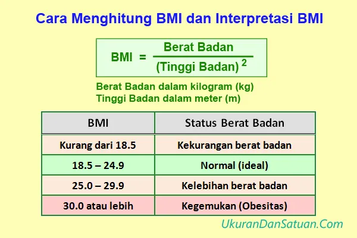

Apa itu BMI?
Body Mass Index (BMI) adalah cara menghitung berat badan ideal
berdasarkan tinggi dan berat badan. BMI juga dapat dibedakan
berdasarkan usia.
Apa itu Kalkulator BMI?
Kalkulator BMI adalah alat untuk mengidentifikasi apakah berat badan
kamu termasuk dalam kategori ideal atau tidak. Kalkulator ini dapat
digunakan oleh seseorang yang berusia 20 tahun ke atas.

Perlu diingat bahwa Kalkulator BMI ini tidak dapat diaplikasikan
untuk ibu hamil dan anak-anak karena standar BMI yang berbeda. Hal
yang perlu diperhatikan pada Kalkulator BMI:
- BMI Normal berada pada kisaran 18.5-24.9
-
Jika angka BMI melebihi 25, maka kamu memiliki berat badan
berlebih
-
Jika angka BMI berada di bawah 18.5, maka kamu memiliki berat
badan rendah
-
Jika angka BMI sudah melebihi angka 30, sebaiknya segera dilakukan
penanganan untuk mencegah timbulnya penyakit